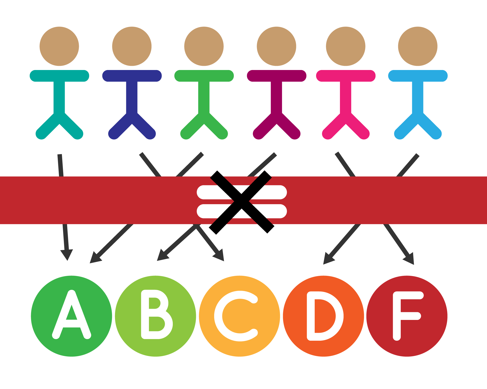

<link rel="import" href="..\..\bower_components/polymer/polymer.html">
<link rel="import" href="..\..\bower_components/paper-button/paper-button.html">

<dom-module id="enrichmenthome-card">
  <template>
    <style>
      .container{
        @apply(--layout-horizontal);
        @apply(--layout-center-justified);
        width: 100%;
      }
    </style>
    <div class="container">
      <div id="entry" class="card">    
       <paper-button on-click="FnSelectEvaluation" no ink></paper-button>
       <h4 align="center">Assesment</h4>
      </div>
      <div  class="card">
       <paper-button on-click="FnSelectBooksCreation" no ink></paper-button>
       <h4 align="center">Book Creation</h4>
      </div>
       <div class="card">
       <paper-button on-click="FnEavaluationMapping" no ink></paper-button>
       <h4 align="center">Evaluation Parameter Mapping</h4>
      </div>
      <div class="card">
       <paper-button on-click="FnSelectMapping" no ink></paper-button>
       <h4 align="center">Student Tracking</h4>
      </div>
    </div>
  </template>
  <script>
  (function() {
    'use strict';

    Polymer({
      is: 'enrichmenthome-card',
      FnSelectEvaluation:function(){
        document.querySelector('home-page').setPage('beginnerassesment','');
      },
      FnSelectBooksCreation:function(){
        document.querySelector('home-page').setPage('books-creation-card','');
      },
      FnSelectMapping:function(){
        document.querySelector('home-page').setPage('enrichment-studentmap-card','');
      },
      FnEavaluationMapping:function(){
        document.querySelector('home-page').setPage('enrichment-evaluationmapping-card','');
      },
      FnRefresh:function(){

      }
    });
  })();
  </script>
</dom-module>
